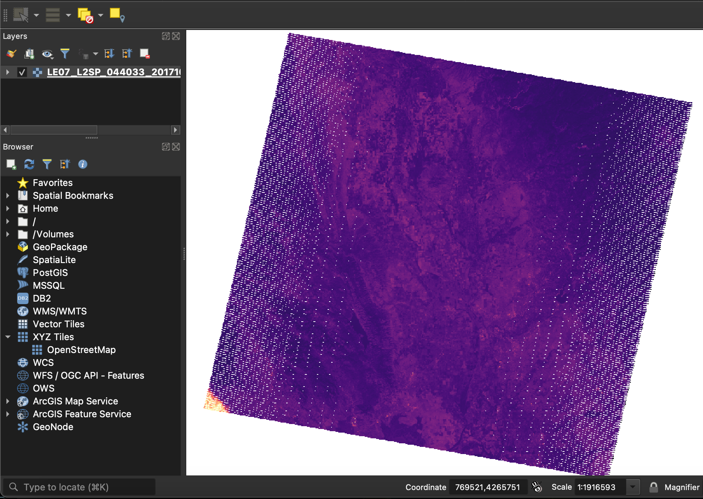
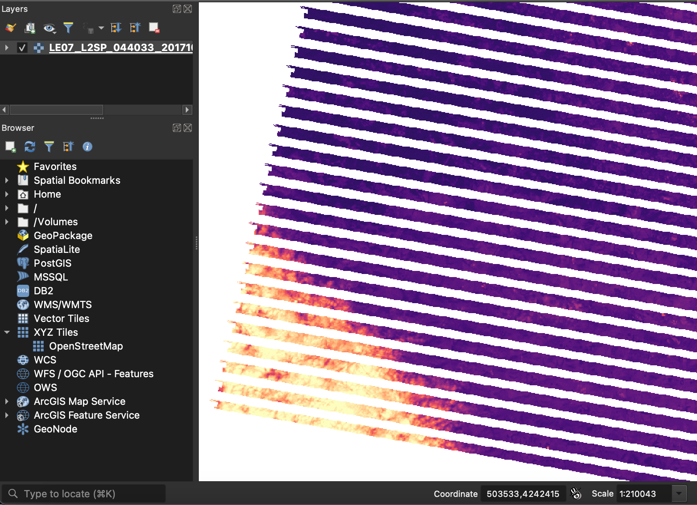
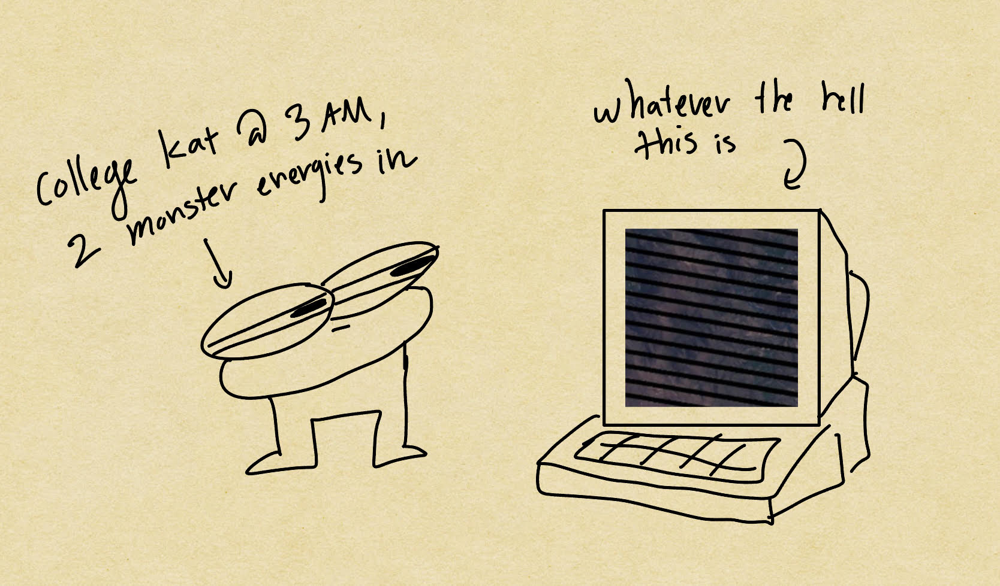
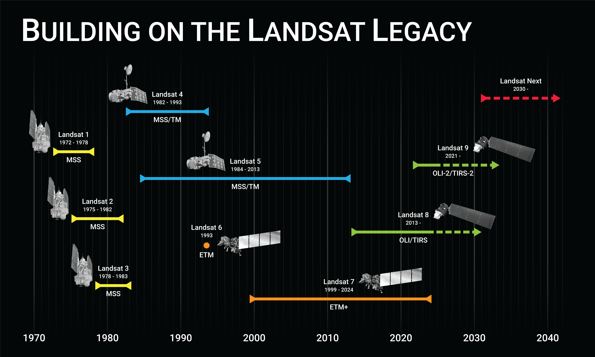
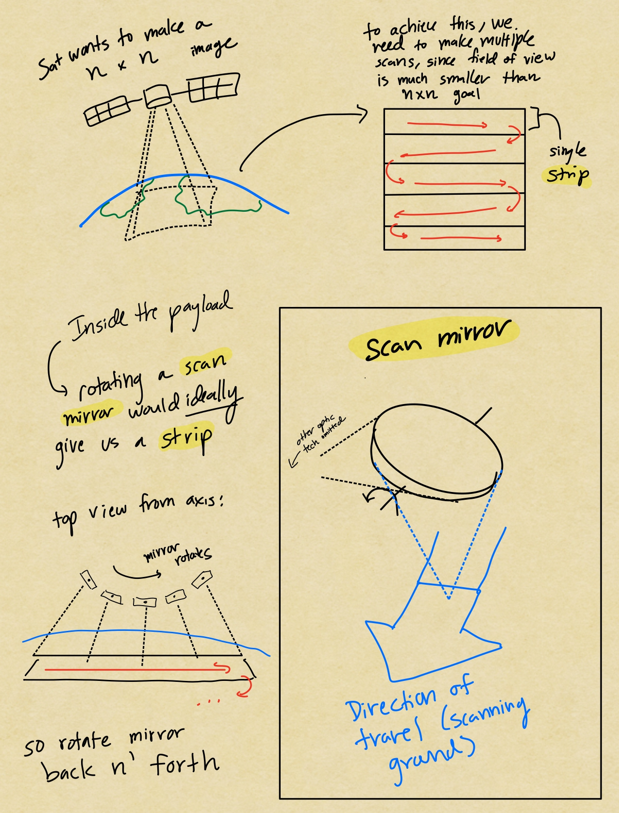
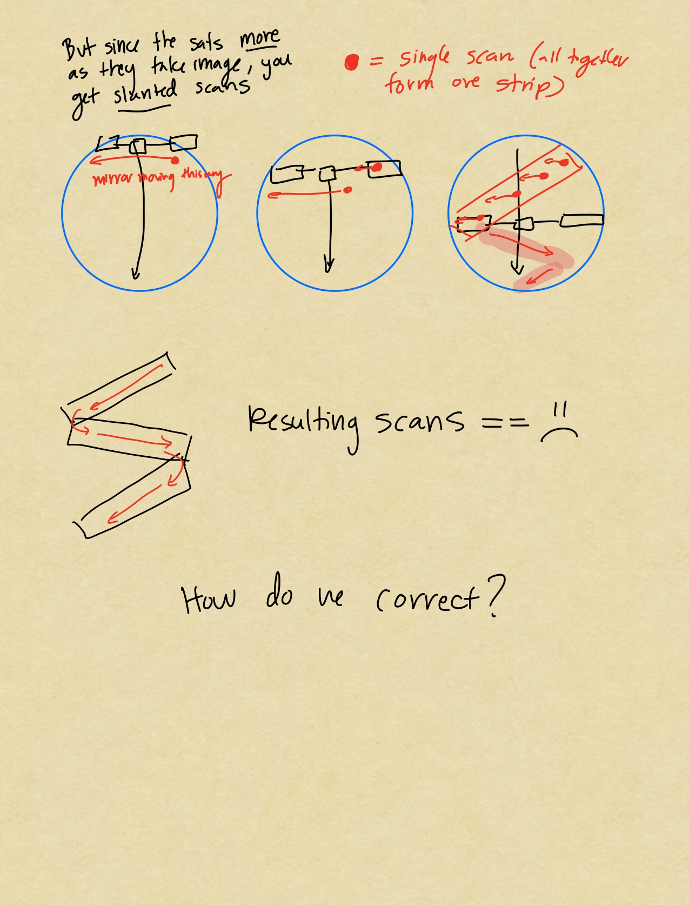
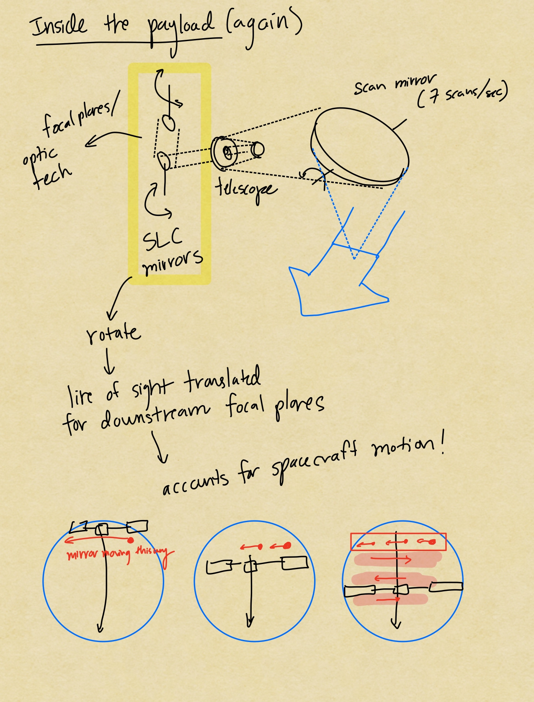

LANDSAT 7: Why are there stripes?
A dive into LANDSAT 7's history and pernament failure
NOTE: This article is under construction!

LANDSAT 7 Imagery for Tubbs (LE07_L2SP_044033_20171028_20200830_02_T1_SR_B1.TIF)

Close up (LE07_L2SP_044033_20171028_20200830_02_T1_SR_B1.TIF)
Preface
Back when I was a freshman in Cal ~2021, I was working for a fire research lab. One of the projects was on the Tubbs Fire, a destructive 2017 fire in Northern California. Part of my lab work was to pull satellite data. Depending on the sensor/product, you could use the data to calculate burned area and severity.
So I downloaded LANDSAT 7 data, opened it, and low and behold there were stripes.

It's been several years since then, but recently I found an info sheet on LANDSAT tucked away in NIFC's FTP server that mentioned this sensor failure [1]. I think it's a pretty interesting story, let's take a dive
What is LANDSAT 7?
LANDSAT 7 is part of the long-running LANDSAT family, a series of earth-observing satellites dedicated to science.

LANDSAT Timeline, source [2]
It's a joint NASA/USGS program, and it's first satellite launched in 1972. Today (2026), the legacy lives on through active satellites (Landsat 8 and 9) and a planned launch (Landsat NEXT)
To say LANDSAT imagery is multi-purpose is an understatement. Use cases range from species distribution, burn area scars, vegetation density, forest change trends, costal change analysis, and so much more.
Fast facts:
- April 15, 1999: LANDSAT 7 launched on a Delta II rocket from Vandenberg Air Force Base
- October, 2008: USGS releases all LANDSAT 7 data for free public use
- June 4, 2025: decommissioned
Personally, it's a joy to look at these images and appreciate Earth. USGS agrees, they've even made a collection called "Earth as Art". Check it out here [3]
 "Desert Ribbons"
"Desert Ribbons"
 "Salty Desolation"
"Salty Desolation"
What is the SLC?
SLC stands for "Scan Line Corrector". Simply put its a device that accounts for the satellite's movement over Earth as it takes an image.
Picture this: LANDSAT 7 forms 1 complete file (183 km swath) by doing several "strips" of work left to right, right to left, left to right, and so on. Since the satellite is moving, your strips side-to-side actually skew if you keep the sensor pointing down in the same position, see diagram, source [4].
 Taken from "Image Impact of the Landsat 7 ETM+ Scan Line Corrector Failure" [4]
Taken from "Image Impact of the Landsat 7 ETM+ Scan Line Corrector Failure" [4]
So what does the SLC do? It's actually made up of 2 parallel mirrors that act as a periscope for the ETM sensor. If you're like me and forgot what that was, its the tube thing you look through in submarines to see the surface.
The mirrors rotate at a slow rate to shift the line-of-sight onto a side-to-side track. This helps compensate for satellite movement as the image is taken. See below my cartoon depiction:



What was the 2003 SLC failure?
WIP
SLC Recovery Efforts and correction
WIP
Citations
- [1] https://ftp.wildfire.gov/public/nirops/Documents/Landsat_Overview.pdf
- [2] https://landsat.gsfc.nasa.gov/satellites/timeline/
- [3] https://www.usgs.gov/centers/eros/earth-art
- [4] https://d9-wret.s3.us-west-2.amazonaws.com/assets/palladium/production/s3fs-public/atoms/files/SLC%20Failure%20Image%20Impact%20Paper%20V1.1.pdf